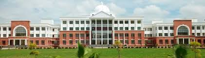
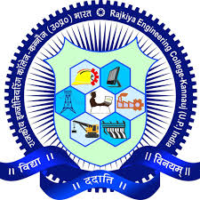

Rajkiya Engineering College, Kannauj was established by the Government of Uttar Pradesh in the year 2015 with four branches,  Electrical Engineering, Electronics Engineering, Civil Engineering and Computer Science & Engineering with annual intake of Sixty (60) in each branch. The college is also affiliating institute of Dr A P J Abdul Kalam Technical University, Lucknow (Formerly Uttar Pradesh Technical University, Lucknow).  The college has moved to its own fully residential campus located at Tirwa, Kannauj in the month of July 2017 and all academic activities from the session 2016-17 has be carried out at its own campus. Fully residential campus of college consists of Academic Building, Workshop, Five Hostels (Boys and Girls), Student Activity Centre, College Canteen, Grocery Store and other facilities for recreation.